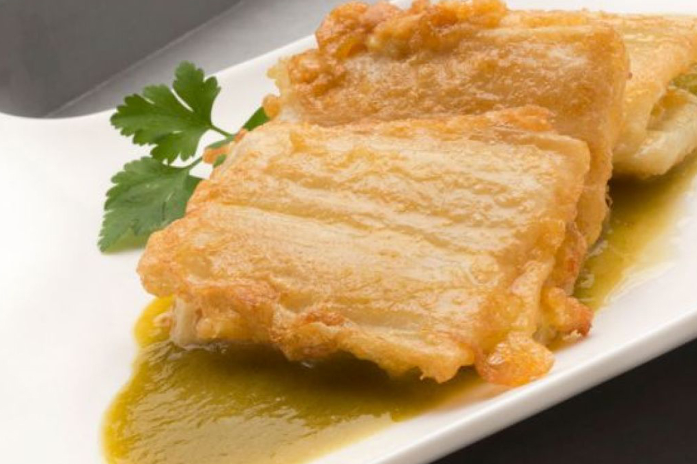

PENCA RELLENA

LA GASTRONOMÍA DE GUANAJUATO ES MUY TRADICIONAL Y CON UN GRAN ARRAIGO A SUS COSTUMBRES, PUES ALGUNOS DE SUS INGREDIENTES SE CULTIVAN EN SUS CAMPOS O LLANURAS. PRUEBA DE ELLO SON LAS EXQUISITAS PENCAS RELLENAS, QUE SE EXTRAEN DE LOS MAGUEYES QUE ADORNAN LAS PLANICIES DE ESTE BELLO ESTADO.
ESTE PLATILLO SE ELABORA CON DOS PENCAS DE MAGUEY QUE SE UNEN PARA COLOCAR ADENTRO UN GUISADO DE NOPALES CON UN RECAUDO DE JITOMATE, CEBOLLA, CHILES DE ÁRBOL, CHILES SERRANOS Y CILANTRO. SE CUECE A LA PARRILLA Y A FUEGO LENTO, LO QUE LE DA UN SABOR ÚNICO. TAMBIÉN SE PUEDEN RELLENAR CON QUESO O CARNE.